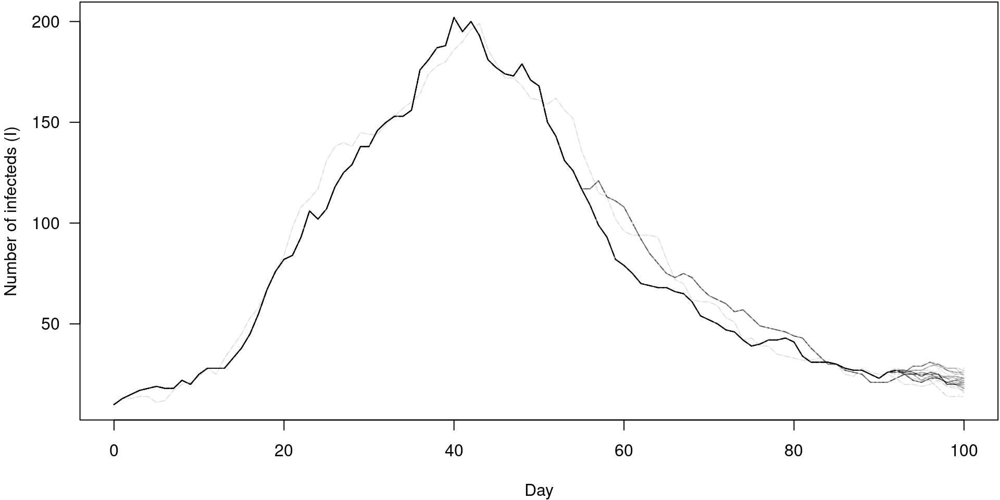

mcstate
State space models
What is it?
- A state space model (SSM) is a mathematical framework for modelling a dynamical system.
- It is built around two processes:
- state equations that describes the evolution of some latent variables (also referred as “hidden” states) over time
- observation equations that relates the observations to the latent variables.
Can you be more precise?
- \(x_{t, 1 \leq t \leq T}\) the hidden states of the system
- \(y_{t, 1 \leq t \leq T}\) the observations
- \(f_{\theta}\) the state transition function
- \(g_{\theta}\) the observation function
- \(t\) is often time
- \(\theta\) defines the model
Two common problems
- Two common needs
- “Filtering” i.e. estimate the hidden states \(x_{t}\) from the observations \(y_t\)
- “Inference” i.e. estimate the \(\theta\)’s compatible with the observations \(y_{t}\)
(Bootstrap) Sequential Monte Carlo
AKA, the particle filter
Assuming a given \(\theta\), at each time step \(t\), BSSMC:
- generates \(X_{t+1}^N\) by using \(f_{\theta}(X_{t+1}^N|X_{t}^N)\) (the \(N\) particles)
- calculates weights for the newly generated states based on \(g_{\theta}(Y_{t+1}|X_{t+1})\)
- resamples the states to keep only the good ones
Allow to explores efficiently the state space by progressively integrating the data points
Produces a MC approximation of \(p(Y_{1:T}|\theta)\) the marginal likelihood
The filter in action

Particle MCMC
What is Particle MCMC?
- PMCMC is an algorithm which performs “filtering” and “inference”
- A Markov Chain Monte Carlo (MCMC) method for estimating target distributions
- MCMC explores the parameter space by moving randomly making jumps from one value to the next
- Probability of going from point to the other is determined by the proposal distribution and the ratio of the likelihood
- Compared with “traditional” MCMC, in PMCMC, the likelihood estimation is approximated using a “particle filter”
- The filter generates a set of “particles” i.e. trajectories compatible with the observation
- It uses these trajectories to compute a (marginal) likelihood that can be use by the PMCMC
Core algorithm
- Initialisation Start with a value \(\theta_{0}\) from the parameter space
- Initial SMC Use sequential Monte Carlo to do the “filtering” and samples of potential \(\{X_{t}\}_{1..N}\). Calculate the (marginal) likelihood from this using a MC estimator
- Proposal Propose a new parameter value \(\theta ^*\)
- SMC Calculate marginal likelihood of proposal
- Metropolis-Hastings Accept with probability \(\min(1, \alpha)\) with \(\alpha = \frac{p(\theta ^*)}{p(\theta_{t})} \cdot \frac{q(\theta_{t})}{q(\theta ^*)}\)
- Loop Redo (3) until the number of steps is reached
mcstate
mcstateis an R package based on the SSM paradigm which aims to provide inference and filtering tools for dust models- Implements several main algorithms for this Particle MCMC (PMCMC), SMC^2, iterated filtering
- Inference tooling for the Centre’s UK COVID model
- Subsequently used for other diseases
Design philosophy
- Less well refined than odin/dust tbh
- We may change and improve much of this, especially MCMC parameters
- More complex structures are built up from simpler objects
- Filter {data, model, n_particles, compare}
- PMCMC {parameters, filter, control}
- Provides you with low-level tools, and little handholding
- Pretty fast though
Particle filtering
Our requirements
- A time series
- A generating model
- An index into model state
- A compare function
(for PMCMC you also need parameters to infer, …later)
The data
Data preparation
The model
N <- S + I + R
p_SI <- 1 - exp(-(beta) * I / N)
p_IR <- 1 - exp(-(gamma))
n_IR <- rbinom(I, p_IR * dt)
n_SI <- rbinom(S, p_SI * dt)
update(time) <- (step + 1) * dt
update(S) <- S - n_SI
update(I) <- I + n_SI - n_IR
update(R) <- R + n_IR
update(cases_cumul) <- cases_cumul + n_SI
update(cases_inc) <- if (step %% freq == 0) n_SI else cases_inc + n_SI
initial(time) <- 0
initial(S) <- 1000
initial(R) <- 0
initial(I) <- I0
initial(cases_cumul) <- 0
initial(cases_inc) <- 0
beta <- user(0.2)
gamma <- user(0.1)
I0 <- user(10)
freq <- user(4)
dt <- 1.0 / freqCompiling the model
* installing *source* package ‘sira5d4bd1a’ ...
** using staged installation
** libs
g++ -std=gnu++11 -I"/usr/share/R/include" -DNDEBUG -I'/home/rfitzjoh/lib/R/library/cpp11/include' -g -Wall -Wextra -pedantic -Wmaybe-uninitialized -Wno-unused-parameter -Wno-cast-function-type -Wno-missing-field-initializers -O2 -I/home/rfitzjoh/lib/R/library/dust/include -DHAVE_INLINE -fopenmp -fpic -g -O2 -fdebug-prefix-map=/build/r-base-a3XuZ5/r-base-4.2.2.20221110=. -fstack-protector-strong -Wformat -Werror=format-security -Wdate-time -D_FORTIFY_SOURCE=2 -c cpp11.cpp -o cpp11.o
g++ -std=gnu++11 -I"/usr/share/R/include" -DNDEBUG -I'/home/rfitzjoh/lib/R/library/cpp11/include' -g -Wall -Wextra -pedantic -Wmaybe-uninitialized -Wno-unused-parameter -Wno-cast-function-type -Wno-missing-field-initializers -O2 -I/home/rfitzjoh/lib/R/library/dust/include -DHAVE_INLINE -fopenmp -fpic -g -O2 -fdebug-prefix-map=/build/r-base-a3XuZ5/r-base-4.2.2.20221110=. -fstack-protector-strong -Wformat -Werror=format-security -Wdate-time -D_FORTIFY_SOURCE=2 -c dust.cpp -o dust.o
g++ -std=gnu++11 -shared -L/usr/lib/R/lib -Wl,-Bsymbolic-functions -Wl,-z,relro -o sira5d4bd1a.so cpp11.o dust.o -fopenmp -L/usr/lib/R/lib -lR
installing to /tmp/Rtmp0uMqpV/devtools_install_2537dc153befd2/00LOCK-file2537dc5e692547/00new/sira5d4bd1a/libs
** checking absolute paths in shared objects and dynamic libraries
* DONE (sira5d4bd1a)The model over time
pars <- list(beta = 0.25, gamma = 0.1)
mod <- sir$new(pars, 0, 20)
y <- mod$simulate(c(0, data$time_end))
i <- mod$info()$index[["time"]]
j <- mod$info()$index[["cases_inc"]]
matplot(y[i, 1, ], t(y[j, , ]), type = "l", col = "#00000055", lty = 1, las = 1,
xlab = "Day", ylab = "Cases")
points(cases ~ day, incidence, col = "red", pch = 19)
The index function
- You rarely care about all the state variables
- You might want different state variables for your compare and for plotting
The compare function
This is the important bit, and something that is a trick to write well.
Files, from this repo
incidence.csv- daily case informationsir.R- a simple SIR model with incidenceindex.R- an index functioncompare.R- a compare function
A particle filter
Particle filter marginal likelihoods are stochastic!
Likelihood variance changes with particle number
filter <- mcstate::particle_filter$new(data, model = sir, n_particles = 10,
compare = compare, index = index)
sort(replicate(10, filter$run(pars))) [1] -267.1850 -263.6292 -262.8457 -261.7034 -259.9648 -259.5186 -258.7828
[8] -258.0611 -254.4378 -251.7591filter <- mcstate::particle_filter$new(data, model = sir, n_particles = 1000,
compare = compare, index = index)
sort(replicate(10, filter$run(pars))) [1] -255.4523 -255.2030 -254.2859 -254.2029 -254.1420 -254.1420 -253.9215
[8] -253.8245 -253.6417 -253.6241- Monte Carlo estimations typically see variance decrease with sample size, this is no different.
- You want a small variance, but that costs a lot of CPU time
Likelihood mean changes with parameter values
Particle filter history
First, run the filter while saving history (off by default)
Particle filter history is a tree
Particle filter history for unobserved states
PMCMC
- Particle MCMC - like MCMC but with a particle filter
- Slower, and harder to tune
- Easy to generate impossibly large amounts of data
- Inherits all the issues of MCMC that you know and love
Algorithm
- Initialisation Start with a value \(\theta_{0}\) from the parameter space
- Initial SMC Use sequential Monte Carlo to do the “filtering” and samples of potential \(\{X_{t}\}_{1..N}\). Calculate the (marginal) likelihood from this using a MC estimator
- Proposal Propose a new parameter value \(\theta ^*\)
- SMC Calculate marginal likelihood of proposal
- Metropolis-Hastings Accept with probability \(\min(1, \alpha)\) with \(\alpha = \frac{p(\theta ^*)}{p(\theta_{t})} \cdot \frac{q(\theta_{t})}{q(\theta ^*)}\)
- Loop Redo (3) until the number of steps is reached
Defining your parameters
- Different to particle filter/model parameters
- filter/model parameters are everything your model needs to run; may include data!
- PMCMC parameters (often called \(\theta\)) are unstructured numeric vector
- the PMCMC parameters are statistical parameters, your model parameters are functional parameters
- Requirements:
- priors for MCMC parameters
- proposal CV for multivariate normal
- transformation from MCMC to model parameters
Priors
(this will improve in future, feedback very welcome)
Proposal
- Variance covariance matrix for a multivariate normal distribution
- Symmetric (except for reflections at any provided boundaries)
Transformation
Convert “MCMC parameters” into “model parameters”
You will want closures in complex models:
Final parameter object
Running PMCMC
control <- mcstate::pmcmc_control(
n_steps = 500,
progress = TRUE)
samples <- mcstate::pmcmc(mcmc_pars, filter, control = control)
samples<mcstate_pmcmc> (500 samples)
pars: 500 x 2 matrix of parameters
beta, gamma
probabilities: 500 x 3 matrix of log-probabilities
log_prior, log_likelihood, log_posterior
state: 6 x 500 matrix of final states
trajectories: (not included)
restart: (not included)Our PMCMC samples
oh.
Assessing fit
- Just look at how bad it is
- In PMCMC, all your ideas from MCMC will be useful but can be misleading; i.e. adaptation is hard
- Gelman-Rubin convergence diagnostic
- Run multiple chains
- Check than within-chain variance is similar to between-chain variance
- Necessary but not sufficient to prove convergence
- A lot of problems in MCMC come from autocorrelation
- Can use the Gelman Rubin diagnostic
Autocorrelation
- Notion from time series, which translates for (P)MCMC in term of the steps of the chains
- Autocorrelation refers to the correlation between the values of a time series at different points in time. In MCMC, this means correlation between successive samples.
- In the context of MCMC, autocorrelation can most of the time be substituted instead of “bad mixing”
- A signature of random-walk MCMC
- Likely to bias estimate (wrong mean) and reduce variance compared with the true posterior distribution
- Linked with the notion of Effective Sample Size, roughly speaking ESS gives the equivalent in i.i.d. samples
Autocorrelation in practice FAQ
- Why is Autocorrelation a Problem? For optimal performance, we want the samples to be independent and identically distributed (i.i.d.) samples from the target distribution.
- How to Detect Autocorrelation? We can calculate the autocorrelation function (ACF), which measures the correlation between the samples and their lagged values.
- How to Reduce Autocorrelation? To mitigate the problem of autocorrelation, there’s a number of strategies, including: using a longer chain, adapting the proposal distribution, using thinning or subsampling techniques. By reducing autocorrelation, we can obtain better estimates of the target distribution and improve the accuracy of our Bayesian inference.
Thinning the chain
- Either before or after fit
- Faster and less memory to thin before
- More flexible to thin later
- No real difference if history not saved
This is useful because most of your chain is not interesting due to the autocorrelation.
Running in parallel
Arguments to mcstate::pmcmc_control
n_chains: number of separate chains to runn_threads_total: total number of threads to usen_workers: number of separate threads to split your chains overuse_parallel_seed: helps with reproducibility
You can also run different chains on different cluster nodes - but talk to us about this.
Let’s try again
vcv <- matrix(c(0.00057, 0.00052, 0.00052, 0.00057), 2, 2)
mcmc_pars <- mcstate::pmcmc_parameters$new(priors, vcv, transform)
control <- mcstate::pmcmc_control(
n_steps = 500,
n_chains = 4,
n_threads_total = 12,
n_workers = 4,
save_state = TRUE,
save_trajectories = TRUE,
progress = TRUE)
samples <- mcstate::pmcmc(mcmc_pars, filter, control = control)
plot(samples$probabilities[, "log_posterior"], type = "s")
Saving history
- Save your trajectories at every collected sample
- Save the final state at every sample
- Save full model state at specific points.
Next steps
- forward time predictions
- posterior predictive checks
- closures and binding data into functions
- min log likelihood (and filter early exit)
- rerun filter in mcmc
Advanced topics
- compiled compare functions
- multi-parameter models
- multi-stage models
- restarting models
- deterministic (expectation) models as starting points
- adaptive fitting (deterministic models only)
- use on a GPU
- use with ODE/SDE models
- other inference methods - if2, smc2
Resources
A nice PMCMC introduction written for the epidemiologist [Endo, A., van Leeuwen, E. & Baguelin, M. Introduction to particle Markov-chain Monte Carlo for disease dynamics modellers. Epidemics 29, 100363 (2019).] (https://www.sciencedirect.com/science/article/pii/S1755436519300301?via%3Dihub)
A tutorial about SMC Doucet, A. & Johansen, A. M. A Tutorial on Particle filtering and smoothing: Fiteen years later. Oxford Handb. nonlinear Filter. 656–705 (2011). doi:10.1.1.157.772
The reference paper on PMCMC Andrieu, C., Doucet, A. & Holenstein, R. Particle Markov chain Monte Carlo methods. J. R. Stat. Soc. Ser. B (Statistical Methodol. 72, 269–342 (2010).
A software oriented paper introducing odin, dust and mcstate R. G. FitzJohn et al. Reproducible parallel inference and simulation of stochastic state space models using odin, dust, and mcstate. Wellcome Open Res. 2021 5288 5, 288 (2021).